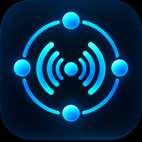

Node-to-Node Exchange — Your devices are the network.
Al instalar o usar NODEX, aceptas estos términos. Si no estás de acuerdo, no uses la aplicación.
NODEX es una herramienta de comunicación de voz punto a punto (P2P) diseñada para conectar dispositivos cercanos directamente entre sí mediante Bluetooth/Wi-Fi Direct, sin que el contenido de audio sea enviado a servidores propios de NODEX. NODEX no está diseñado para monitorear, moderar, grabar ni almacenar el contenido de las comunicaciones de voz. El funcionamiento puede depender de servicios del sistema operativo y de terceros necesarios para conectividad, compras, diagnóstico y estabilidad, según se explica en la Política de Privacidad.
Aceptas usar NODEX únicamente de forma legal y respetuosa. Específicamente, aceptas que no usarás NODEX para:
Eres el único responsable del contenido de tus comunicaciones de voz y de las sesiones que crees o a las que te unas. Como se explica en el punto 2, no podemos revisar, moderar ni eliminar contenido de una conversación en curso — es tu responsabilidad, igual que con cualquier walkie-talkie físico o llamada telefónica.
NODEX puede utilizarse como herramienta de comunicación durante desplazamientos y actividades en movimiento. No debes manipular manualmente el dispositivo cuando hacerlo pueda distraerte de la conducción o comprometer tu seguridad. Se recomienda configurar la sesión y los controles necesarios antes de iniciar la marcha y utilizar sistemas manos libres compatibles cuando corresponda. Eres responsable de operar cualquier vehículo de forma segura y de cumplir las leyes de tránsito aplicables en tu país.
NODEX se ofrece "tal cual" ("as is"), sin garantías de ningún tipo, en la máxima medida permitida por la ley. En particular, no garantizamos: alcance de conexión específico (depende del dispositivo, entorno y obstáculos), ausencia de interrupciones, disponibilidad continua del servicio, ni que el resultado sea adecuado para un propósito particular. NODEX no sustituye servicios de emergencia, sistemas profesionales de radiocomunicación ni otros medios de comunicación de seguridad crítica.
En la máxima medida permitida por la ley, NODEX y su desarrollador no serán responsables por daños indirectos, incidentales, especiales o consecuentes derivados del uso o la imposibilidad de usar la app, incluyendo — sin limitarse a — pérdida de comunicación en una situación de emergencia, accidentes, o conflictos entre usuarios de una misma sesión. Esta limitación no excluye ni restringe derechos irrenunciables que correspondan al usuario conforme a la legislación aplicable.
El desbloqueo del nivel Pro se procesa a través de Google Play (o Apple App Store cuando exista). La facturación, los comprobantes, la restauración de compras y los procedimientos de reembolso o disputa se gestionan de acuerdo con las reglas y sistemas de la tienda correspondiente, sin perjuicio de los derechos irrenunciables que pueda reconocer la legislación aplicable. El desbloqueo Pro queda asociado a la cuenta de la tienda (Google Play o Apple ID) activa en tu dispositivo al momento de la compra, no a una cuenta de NODEX — NODEX no mantiene cuentas de usuario ni un sistema propio de verificación de compras, y se apoya enteramente en los mecanismos de verificación de la tienda correspondiente. Si cambias de dispositivo o de cuenta de la tienda, usa la función de restaurar compra iniciando sesión con la misma cuenta con la que compraste. Las funcionalidades incluidas en Pro pueden evolucionar con futuras versiones de NODEX y la compra no constituye una garantía de compatibilidad o disponibilidad indefinida en futuros dispositivos, sistemas operativos o versiones.
Te otorgamos una licencia limitada, personal, no exclusiva y no transferible para usar NODEX en tus propios dispositivos, sujeta a estos términos y a las reglas de uso de la tienda desde la que la descargaste (Google Play, y Apple cuando aplique).
Además de estos términos, debes cumplir los términos de servicio de la tienda desde la que instalaste NODEX (Google Play Terms of Service, y los Apple Media Services Terms and Conditions cuando exista versión iOS).
Debes tener al menos 16 años para usar NODEX. Si tienes entre 16 y 17 años, eres menor de edad conforme a la ley chilena (mayoría de edad: 18 años) — en ese caso, tu padre, madre o representante legal es responsable junto contigo por tu uso de la aplicación y por el contenido de tus comunicaciones. Si eres menor de 16 años, no debes instalar ni usar la aplicación bajo ninguna circunstancia.
Podemos discontinuar NODEX o restringir su disponibilidad, total o parcialmente, por razones técnicas, operativas, legales o comerciales. No garantizamos mantenimiento o soporte indefinidos. Lo anterior se entiende sin perjuicio de los derechos que correspondan al usuario conforme a la legislación de protección al consumidor aplicable.
Cualquier cambio se reflejará actualizando la fecha en la parte superior de esta página. Cuando los cambios sean materiales, podremos proporcionar un aviso adicional dentro de la aplicación o mediante otros medios razonables, cuando corresponda. El uso continuado de la app tras la entrada en vigor de los cambios implica tu aceptación, en la medida permitida por la ley.
Estos términos se rigen por las leyes de la República de Chile. Cualquier disputa relacionada con el uso de NODEX se someterá a los tribunales competentes de Chile, sin perjuicio de los derechos irrenunciables que la ley de tu país de residencia pueda reconocerte como consumidor.
Aceptas indemnizar y mantener indemne a NODEX y a su desarrollador frente a cualquier reclamo, demanda, daño o gasto (incluyendo honorarios legales razonables) que un tercero presente como consecuencia de tu uso de la aplicación, del contenido de tus comunicaciones, o de tu incumplimiento de estos términos — excepto en la medida en que dicho reclamo derive de un incumplimiento propio de NODEX.
Si alguna disposición de estos términos es declarada inválida o inaplicable por un tribunal competente, esa disposición se interpretará de forma que refleje la intención original de las partes en la mayor medida permitida por la ley, y el resto de los términos permanecerá en pleno vigor y efecto.
Estos términos, junto con la Política de Privacidad, constituyen el acuerdo íntegro entre tú y NODEX respecto al uso de la aplicación, y reemplazan cualquier acuerdo o entendimiento previo sobre la misma materia.
Estos términos se ofrecen en español e inglés. En caso de discrepancia o conflicto entre ambas versiones, prevalecerá la versión en español.
NODEX es una aplicación de comunicación de voz punto a punto (P2P) que funciona sin internet ni servidores propios, usando Bluetooth y Wi-Fi Direct para conectar dispositivos cercanos directamente entre sí.
Qué NO hace NODEX: no tiene cuentas de usuario, no tiene servidores propios, no muestra publicidad, no graba ni almacena tus conversaciones de voz, no vende ni comparte datos con terceros con fines publicitarios.
| Dato | Qué pasa con él |
|---|---|
| Alias/nombre que escribes | Se comparte únicamente con los dispositivos conectados a tu misma sesión, por el canal cifrado P2P. Nunca sale hacia ningún servidor. No se guarda una vez cierras la sesión. |
| Audio de voz | Se transmite en tiempo real, cifrado de extremo a extremo (AES-256-GCM), directo entre dispositivos. No se graba, no se almacena, no pasa por ningún servidor. |
| Ubicación | NODEX no lee ni comparte tu ubicación GPS. El permiso de ubicación que pide Android existe únicamente porque el sistema operativo lo exige para el descubrimiento Bluetooth/Wi-Fi en ciertas versiones — la app no consulta tus coordenadas. |
| Cámara | Se usa solo para escanear el código QR de invitación a una sesión. No se toman fotos, no se guardan ni suben imágenes. |
| Idioma elegido y estado de tu compra Pro | Se guardan únicamente en el almacenamiento seguro de tu propio dispositivo (Keystore de Android). Nunca se transmiten a nosotros ni a nadie. |
| Compra del Pro | La procesa enteramente Google Play. No vemos ni almacenamos tu información de pago — eso lo maneja Google según su propia política de privacidad. |
| Datos técnicos de diagnóstico y uso (fallos/crashes y eventos mínimos como "se creó una sala" o "una sesión llegó a 2 participantes") | Recolectados por Firebase Crashlytics (fallos) y Aptabase (eventos de uso). Estos servicios pueden procesar datos técnicos del dispositivo y de la aplicación — por ejemplo, versión de Android/iOS, versión de la app, idioma del sistema, modelo del dispositivo y determinados identificadores técnicos de instalación o sesión necesarios para diagnóstico. NODEX no añade a estos reportes tu alias, código de sala, contenido de audio ni ubicación GPS. Se utilizan para detectar errores, medir estabilidad y mejorar el funcionamiento, no para publicidad. |
Con nadie fuera de tu sesión P2P local, salvo los datos técnicos de diagnóstico y uso descritos arriba. No existen servidores propios de NODEX que reciban el contenido de tus comunicaciones. Google Play Services puede intervenir en funciones de conectividad, Google Play gestiona las compras, y Google (Firebase Crashlytics) y Aptabase reciben determinados datos técnicos necesarios para diagnóstico y analítica mínima, cada uno bajo sus propios términos y políticas de privacidad.
Firebase Crashlytics y Aptabase pueden procesar y almacenar los datos técnicos de diagnóstico y uso descritos arriba en servidores ubicados fuera de Chile (incluyendo Estados Unidos), conforme a sus propias políticas de privacidad y salvaguardas de transferencia internacional. Esto no aplica al contenido de tus comunicaciones de voz, que nunca sale de tu sesión P2P local.
Cada mensaje y cada fragmento de audio viaja cifrado (AES-256-GCM) entre los dispositivos conectados.
No guardamos en servidores propios el contenido de tu sesión una vez termina. El idioma elegido y el estado de tu compra Pro se almacenan localmente en tu dispositivo. Los datos técnicos de diagnóstico y uso pueden ser conservados por Firebase Crashlytics y Aptabase conforme a sus políticas, configuraciones y períodos de retención aplicables. NODEX no mantiene una copia independiente de esos datos fuera de dichos servicios.
NODEX no mantiene cuentas de usuario ni almacena en servidores propios el contenido de tus sesiones. Determinados datos técnicos de diagnóstico y uso pueden ser tratados por proveedores como Firebase Crashlytics y Aptabase, según se describe en esta política. Puedes contactar a NODEX en nodex.dev.mobile@gmail.com para realizar consultas sobre privacidad o ejercer los derechos que te reconozca la legislación aplicable. Algunas solicitudes pueden estar técnicamente limitadas cuando los datos no permiten identificar razonablemente a la persona que realiza la solicitud. Desinstalar la app elimina los datos almacenados localmente en el dispositivo.
NODEX no está dirigida a personas menores de 16 años y no solicita conscientemente sus datos. Si tienes entre 16 y 17 años (menor de edad conforme a la ley chilena), tu padre, madre o representante legal también es responsable, junto contigo, por tu uso de NODEX. Al no requerir cuentas ni datos personales, no existe un mecanismo dentro de la app para verificar la edad más allá de esta restricción declarada.
Se reflejarán actualizando la fecha de esta página. Cuando un cambio sea material y la legislación aplicable lo requiera, podremos proporcionar un aviso adicional dentro de la aplicación o por otros medios razonables.
By installing or using NODEX, you accept these terms. If you disagree, don't use the app.
NODEX is a peer-to-peer (P2P) voice communication tool designed to connect nearby devices directly over Bluetooth/Wi-Fi Direct, without sending voice content to NODEX-operated servers. NODEX is not designed to monitor, moderate, record, or store the content of voice communications. Operation may depend on operating-system services and third parties required for connectivity, purchases, diagnostics, and stability, as described in the Privacy Policy.
You agree to use NODEX only legally and respectfully. Specifically, you agree not to use NODEX to:
You are solely responsible for the content of your voice communications and for any sessions you create or join. As explained in section 2, we cannot review, moderate, or remove content from an ongoing conversation — it's your responsibility, same as with any physical walkie-talkie or phone call.
NODEX may be used as a communication tool during travel and activities in motion. You must not manually interact with the device when doing so could distract you from driving or compromise safety. You should configure the session and required controls before starting to drive and use compatible hands-free systems where appropriate. You are responsible for operating any vehicle safely and complying with applicable traffic laws in your country.
NODEX is provided "as is," with no warranties of any kind, to the maximum extent permitted by law. In particular, we do not guarantee a specific connection range (which depends on device, environment, and obstacles), uninterrupted operation, continuous availability, or fitness for a particular purpose. NODEX does not replace emergency services, professional radio systems, or other safety-critical communication methods.
To the maximum extent permitted by law, NODEX and its developer are not liable for indirect, incidental, special, or consequential damages arising from use or inability to use the app, including — without limitation — loss of communication during an emergency, accidents, or conflicts between users in the same session. This limitation does not exclude or restrict non-waivable rights available to users under applicable law.
The Pro tier unlock is processed through Google Play (or Apple's App Store once available). Billing, receipts, purchase restoration, and refund or dispute procedures are handled in accordance with the rules and systems of the relevant store, without prejudice to any non-waivable rights under applicable law. The Pro unlock is tied to the store account (Google Play or Apple ID) active on your device at the time of purchase, not to a NODEX account — NODEX does not maintain user accounts or its own purchase-verification system, and relies entirely on the relevant store's verification mechanisms. If you change devices or store accounts, use the restore-purchase feature signed into the same account you purchased with. Features included in Pro may evolve in future NODEX versions, and the purchase does not guarantee indefinite compatibility or availability on future devices, operating systems, or versions.
We grant you a limited, personal, non-exclusive, non-transferable license to use NODEX on your own devices, subject to these terms and the usage rules of the store you downloaded it from (Google Play, and Apple once applicable).
In addition to these terms, you must comply with the terms of service of the store you installed NODEX from (Google Play Terms of Service, and Apple Media Services Terms and Conditions once an iOS version exists).
You must be at least 16 years old to use NODEX. If you are 16 or 17, you are a legal minor under Chilean law (age of majority: 18) — in that case, your parent or legal guardian is responsible, together with you, for your use of the app and the content of your communications. If you are under 16, you must not install or use the app under any circumstance.
We may discontinue NODEX or restrict its availability, in whole or in part, for technical, operational, legal, or commercial reasons. We do not guarantee indefinite maintenance or support. This is without prejudice to any rights users may have under applicable consumer-protection law.
Any change will be reflected by updating the date at the top of this page. Where changes are material, we may provide additional notice in the app or through other reasonable means when appropriate. Continued use after changes take effect constitutes acceptance to the extent permitted by law.
These terms are governed by the laws of the Republic of Chile. Any dispute related to the use of NODEX will be submitted to the competent courts of Chile, without prejudice to any non-waivable consumer rights recognized under the laws of your country of residence.
You agree to indemnify and hold harmless NODEX and its developer from any claim, demand, damage, or expense (including reasonable legal fees) brought by a third party as a result of your use of the app, the content of your communications, or your breach of these terms — except to the extent such claim arises from NODEX's own breach.
If any provision of these terms is found invalid or unenforceable by a court of competent jurisdiction, that provision will be interpreted to reflect the parties' original intent to the greatest extent permitted by law, and the remaining terms will remain in full force and effect.
These terms, together with the Privacy Policy, constitute the entire agreement between you and NODEX regarding use of the app, and supersede any prior agreement or understanding on the same subject.
These terms are provided in Spanish and English. In the event of any discrepancy or conflict between the two versions, the Spanish version will prevail.
NODEX is a peer-to-peer (P2P) voice communication app that works without internet or our own servers, using Bluetooth and Wi-Fi Direct to connect nearby devices directly to each other.
What NODEX does NOT do: no user accounts, no servers of our own, no ads, no recording or storing your voice conversations, no selling or sharing data with third parties for advertising.
| Data | What happens to it |
|---|---|
| The alias/name you type | Shared only with devices connected to your session, over the encrypted P2P channel. Never leaves toward any server. Not kept once you close the session. |
| Voice audio | Transmitted in real time, end-to-end encrypted (AES-256-GCM), directly between devices. Never recorded, never stored, never routed through any server. |
| Location | NODEX does not read or share your GPS location. The location permission Android requires exists only because the OS mandates it for Bluetooth/Wi-Fi discovery on certain versions — the app never queries your coordinates. |
| Camera | Used only to scan a session's invitation QR code. No photos are taken or stored, no images are uploaded anywhere. |
| Chosen language and Pro purchase status | Stored only in your device's secure storage (Android Keystore). Never transmitted to us or anyone else. |
| Pro purchase | Handled entirely by Google Play. We never see or store your payment information — Google handles that under its own privacy policy. |
| Technical diagnostic and usage data (crashes/failures and minimal events such as "a room was created" or "a session reached 2 participants") | Collected by Firebase Crashlytics (failures) and Aptabase (usage events). These services may process technical device and app data — for example, Android/iOS version, app version, system language, device model, and certain technical installation or session identifiers required for diagnostics. NODEX does not add your alias, room code, audio content, or GPS location to these reports. The data is used to detect bugs, measure stability, and improve operation, not for advertising. |
No one outside your local P2P session, except for the technical diagnostic and usage data described above. There are no NODEX-operated servers receiving the content of your communications. Google Play Services may support connectivity features, Google Play handles purchases, and Google (Firebase Crashlytics) and Aptabase receive certain technical data required for diagnostics and minimal analytics, each under their own terms and privacy policies.
Firebase Crashlytics and Aptabase may process and store the technical diagnostic and usage data described above on servers located outside Chile (including the United States), under their own privacy policies and international-transfer safeguards. This does not apply to the content of your voice communications, which never leaves your local P2P session.
Every message and audio frame is encrypted (AES-256-GCM) between connected devices.
NODEX does not store the content of your session on its own servers once the session ends. Your chosen language and Pro status are stored locally on your device. Technical diagnostic and usage data may be retained by Firebase Crashlytics and Aptabase according to their applicable policies, settings, and retention periods. NODEX does not keep a separate copy of that data outside those services.
NODEX does not maintain user accounts or store session content on its own servers. Certain technical diagnostic and usage data may be processed by providers such as Firebase Crashlytics and Aptabase as described in this policy. You may contact NODEX at nodex.dev.mobile@gmail.com with privacy questions or to exercise rights available under applicable law. Some requests may be technically limited where the data does not allow us to reasonably identify the person making the request. Uninstalling the app removes data stored locally on the device.
NODEX is not directed at anyone under 16 and does not knowingly collect their data. If you are 16 or 17 (a legal minor under Chilean law), your parent or legal guardian is also responsible, together with you, for your use of NODEX. Since the app requires no accounts or personal data, there is no in-app mechanism to verify age beyond this stated restriction.
Will be reflected by updating this page's date. Where a change is material and applicable law requires it, we may provide additional notice in the app or through other reasonable means.